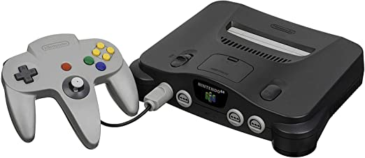

Nintendo 64 es la cuarta videoconsola de sobremesa producida por Nintendo, desarrollada para suceder a la Super Nintendo y para competir con el Saturn de Sega y la PlayStation de Sony.
Incorpora en su arquitectura un procesador principal de 64 bits. El soporte de almacenamiento de los juegos es en forma de cartuchos, la mayoría de ellos con memoria interna. El uso de este tipo de almacenamiento le supuso una seria desventaja comercial frente a sus competidores, ya que encarecía los costes de producción lo que aumentaba el precio final, y además, era de una capacidad de almacenamiento menor al de un CD-ROM.
En 1988, Nintendo comienza el desarrollo de una unidad lectora de CD, para su consola de 16 bits Super Nintendo en acuerdo con Sony, pero este proyecto fue cancelado en 1992
El 23 de agosto de 1993, Nintendo realizó una serie de alianzas a la que denomina Dreamteam. En esta alianza realiza un acuerdo estratégico con Silicon Graphics y Rambus Inc. para el hardware; Alias-Wave Front y Multigen para las herramientas de programación; Rare y Williams para el software. Así iniciaron el desarrollo de esta consola a la que denominaron Project Reality. Pronto, muchos desarrolladores de software anuncian estar desarrollando juegos para la nueva consola como Doom 64, KIller Instinct...
Ir a Inicio Oddysey
Oddysey
 Sega Megadrive
Sega Megadrive
 Atari 2600
Atari 2600
 Dreamcast
Dreamcast
 PlayStation 1
PlayStation 1